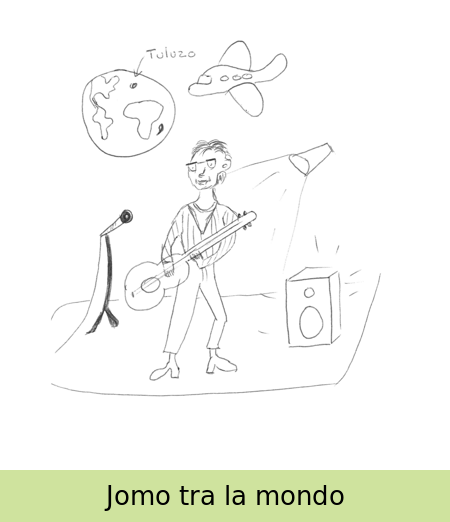

- Eŭropo ne aperas sur la terglobo
- Jomo havas unu fleksan genuon
- Aviadilo situas desktren de la terglobo
- Ŝuoj havas kalkanumojn
- Aviadilo montras 3 fesnestretojn
- Bruo eliras de laŭtilo
- Ĉemizo estas striita
- Mikrofono staras sur piedo
- Lumo aperas pere de reflektoro
- Apud Afriko, insulo aperas